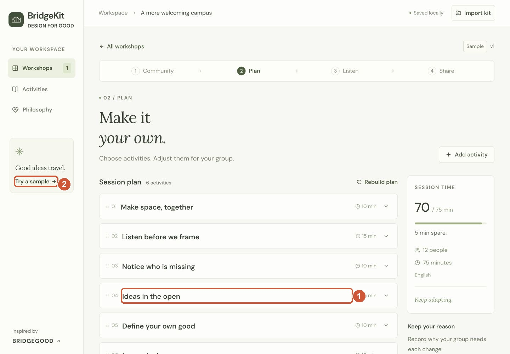

Say this
BridgeKit · Four-minute rehearsal
One barrier. A thoughtful change. A useful handoff.
An edited walkthrough of actual app screenshots with click highlights. All sample data is fictional.

Say this
At 3:30, stop clicking and deliver the closing.
Full script with every screenshot
The script has 355 words, with time reserved for interaction.